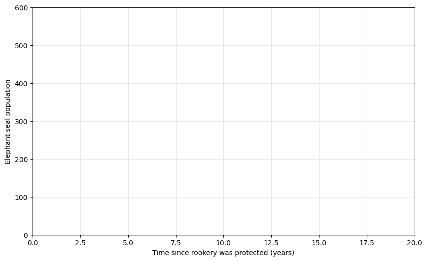
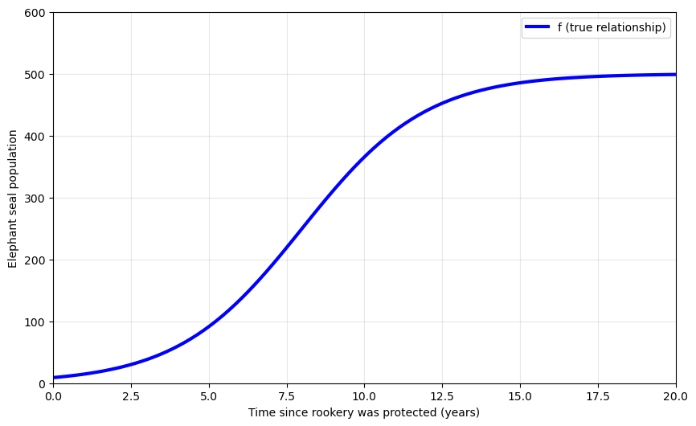
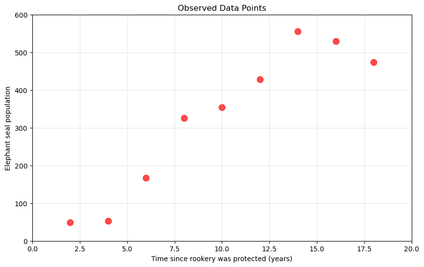
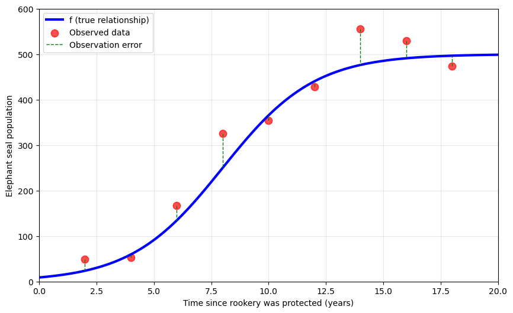
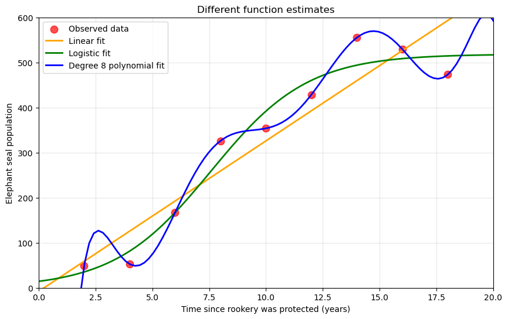
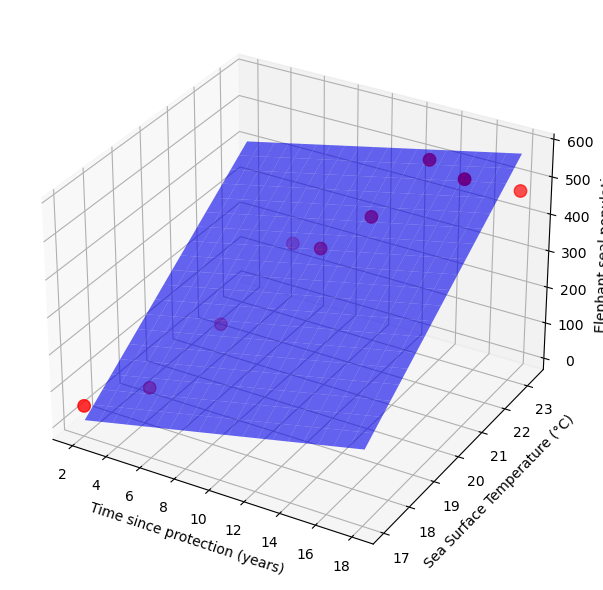

import os
import numpy as np
import matplotlib.pyplot as plt
from scipy.optimize import curve_fit
from mpl_toolkits.mplot3d import Axes3D
from sklearn.linear_model import LinearRegression
# Set consistent style
plt.style.use('default')
fig_size_x = 8
fig_size_y = 4
plt.rcParams['font.size'] = 10
# Generate synthetic data for elephant seal population
# Using a logistic growth curve as the "true" relationship
def logistic_function(x, L, k, x0):
return L / (1 + np.exp(-k * (x - x0)))
# Time points (years since protection)
time = np.linspace(0, 20, 100)
true_population = logistic_function(time, L=500, k=0.5, x0=8)
# Observed data points (with some noise)
np.random.seed(42) # For reproducibility
observed_time = np.array([2, 4, 6, 8, 10, 12, 14, 16, 18])
observed_population = logistic_function(observed_time, L=500, k=0.5, x0=8) + np.random.normal(0, 50, len(observed_time))
# Synthetic SST data (Sea Surface Temperature)
# SST varies with time, simulating seasonal and long-term patterns
observed_sst = 15 + 2 * np.sin(observed_time / 5) + 0.5 * observed_time + np.random.normal(0, 0.5, len(observed_time))
# GRAPH 1: Empty axes
plt.figure(figsize=(10, 6))
plt.xlabel('Time since rookery was protected (years)')
plt.ylabel('Elephant seal population')
plt.grid(True, alpha=0.3)
plt.xlim(0, 20)
plt.ylim(0, 600)
plt.savefig(f'{image_dir}/graph1_empty_axes.png', dpi=150, bbox_inches='tight')
plt.show()
plt.close()

# GRAPH 2: True relationship (sigmoidal function f)
plt.figure(figsize=(10, 6))
plt.plot(time, true_population, 'b-', linewidth=3, label='f (true relationship)')
plt.xlabel('Time since rookery was protected (years)')
plt.ylabel('Elephant seal population')
#plt.title('"True Relationship" of elephant se')
plt.grid(True, alpha=0.3)
plt.xlim(0, 20)
plt.ylim(0, 600)
plt.legend()
plt.savefig(f'{image_dir}/graph2_true_relationship.png', dpi=150, bbox_inches='tight')
plt.show()
plt.close()
# GRAPH 3: Observed data points only
plt.figure(figsize=(10, 6))
plt.scatter(observed_time, observed_population, s=80, c='red', alpha=0.7)
plt.xlabel('Time since rookery was protected (years)')
plt.ylabel('Elephant seal population')
plt.title('Observed Data Points')
plt.grid(True, alpha=0.3)
plt.xlim(0, 20)
plt.ylim(0, 600)
plt.savefig(f'{image_dir}/graph3_observed_data.png', dpi=150, bbox_inches='tight')
plt.show()
plt.close()
# GRAPH 4: Observed data with true function and error lines
plt.figure(figsize=(10, 6))
plt.plot(time, true_population, 'b-', linewidth=3, label='f (true relationship)')
plt.scatter(observed_time, observed_population, s=80, c='red', alpha=0.7, label='Observed data')
# Add error lines
i=0
for t, obs_pop in zip(observed_time, observed_population):
true_pop = logistic_function(t, L=500, k=0.5, x0=8)
if i==0:
plt.plot([t, t], [obs_pop, true_pop], 'g--', linewidth=1, label="Observation error")
i+=1
else:
plt.plot([t, t], [obs_pop, true_pop], 'g--', linewidth=1)
plt.xlabel('Time since rookery was protected (years)')
plt.ylabel('Elephant seal population')
#plt.title('GRAPH 4: Observed Data with True Function and Errors')
plt.grid(True, alpha=0.3)
plt.xlim(0, 20)
plt.ylim(0, 600)
plt.legend(loc='upper left')
plt.savefig(f'{image_dir}/graph4_with_errors.png', dpi=150, bbox_inches='tight')
plt.show()
plt.close()
# GRAPH 5: Different function estimates
plt.figure(figsize=(10, 6))
plt.scatter(observed_time, observed_population, s=80, c='red', alpha=0.7, label='Observed data')
# Linear fit
linear_coeffs = np.polyfit(observed_time, observed_population, 1)
linear_fit = np.polyval(linear_coeffs, time)
plt.plot(time, linear_fit, 'orange', linewidth=2, label='Linear fit')
# Logistic fit (using curve_fit)
def logistic_simple(x, L, k, x0):
return L / (1 + np.exp(-k * (x - x0)))
popt, _ = curve_fit(logistic_simple, observed_time, observed_population, p0=[500, 0.5, 8])
logistic_fit = logistic_simple(time, *popt)
plt.plot(time, logistic_fit, 'green', linewidth=2, label='Logistic fit')
# Overfitting (high degree polynomial)
poly_coeffs = np.polyfit(observed_time, observed_population, 8)
overfit = np.polyval(poly_coeffs, time)
plt.plot(time, overfit, 'blue', linewidth=2, label='Degree 8 polynomial fit')
plt.xlabel('Time since rookery was protected (years)')
plt.ylabel('Elephant seal population')
plt.title('Different function estimates')
plt.grid(True, alpha=0.3)
plt.xlim(0, 20)
plt.ylim(0, 600)
plt.legend()
plt.savefig(f'{image_dir}/graph5_function_estimates.png', dpi=150, bbox_inches='tight')
plt.show()
plt.close()
observed_timearray([ 2, 4, 6, 8, 10, 12, 14, 16, 18])observed_populationarray([ 48.54864424, 52.68824595, 166.85513759, 326.15149282,
353.82162058, 428.69169114, 555.24770419, 529.37863148,
473.17985524])# Linear model fitting with two predictors: time and SST
# Prepare data for linear regression
X = np.column_stack([observed_time, observed_sst]) # Predictors
y = observed_population # Response
# Fit linear model
model = LinearRegression()
model.fit(X, y)
# Get model parameters
beta_0 = model.intercept_
beta_1, beta_2 = model.coef_
print(f"Linear Model: Population = {beta_0:.2f} + {beta_1:.2f}*Time + {beta_2:.2f}*SST")
# Create prediction surface for visualization
time_range = np.linspace(observed_time.min(), observed_time.max(), 20)
sst_range = np.linspace(observed_sst.min(), observed_sst.max(), 20)
time_mesh, sst_mesh = np.meshgrid(time_range, sst_range)
population_mesh = beta_0 + beta_1 * time_mesh + beta_2 * sst_mesh
# 3D visualization
fig = plt.figure(figsize=(10, 6))
ax = fig.add_subplot(111, projection='3d')
# Plot the fitted plane
ax.plot_surface(time_mesh, sst_mesh, population_mesh, alpha=0.6, color='blue', label='Fitted plane')
# Plot the observed data points
ax.scatter(observed_time, observed_sst, observed_population, color='red', s=80, label='Observed data')
ax.set_xlabel('Time since protection (years)')
ax.set_ylabel('Sea Surface Temperature (°C)')
ax.set_zlabel('Elephant seal population')
#ax.set_title('Linear Model: Population ~ Time + SST')
#ax.legend()
plt.tight_layout()
plt.show()
plt.close()Linear Model: Population = -1112.46 + 10.10*Time + 64.58*SST
observed_sstarray([17.05011671, 18.20300334, 19.6312133 , 21.12012834, 20.86195473,
21.48846744, 22.38883254, 22.37683615, 23.27208278])
deep_long = np.random.multivariate_normal([550, 45], [[1500, 30], [30, 20]], 30)
shallow_freq = np.random.multivariate_normal([150, 12], [[800, 20], [20, 8]], 30)
medium = np.random.multivariate_normal([350, 28], [[1000, 25], [25, 12]], 30)deep_longarray([[585.29351706, 39.49454638],
[493.25595895, 42.85581108],
[547.51175009, 38.67420176],
[571.07390112, 45.91556292],
[594.54415596, 47.5573339 ],
[573.28859621, 44.18709123],
[573.13869659, 53.62729583],
[550.61710041, 40.35375791],
[518.25196636, 38.97945023],
[542.08558793, 36.20816415],
[601.42272638, 46.90901073],
[521.38410075, 45.17498711],
[554.50588777, 43.76507034],
[607.32697459, 42.99096294],
[567.74611155, 50.01572356],
[536.84903388, 36.96812884],
[537.48266765, 43.05025845],
[576.16244023, 48.22426374],
[509.98658826, 48.29112463],
[582.53025298, 44.29718345],
[537.08322984, 49.03512304],
[568.57485151, 44.55861755],
[592.95476712, 40.60158965],
[518.41010591, 50.33356072],
[552.69940922, 49.47481093],
[536.05148413, 41.87591058],
[535.86603998, 51.48798476],
[551.24795374, 51.91684469],
[651.38870197, 50.67444726],
[546.65536441, 43.61523691]])shallow_freqarray([[147.54190056, 6.49476844],
[156.18857531, 13.1341736 ],
[108.23476504, 9.52664837],
[172.90224007, 11.20384871],
[124.08588887, 12.2463447 ],
[164.94838572, 13.78288902],
[147.18733705, 14.58176986],
[169.87963225, 11.60434878],
[161.1915439 , 8.27442205],
[141.60644789, 12.50310804],
[149.87157275, 11.35431371],
[190.0616642 , 11.85902579],
[159.74881398, 10.04889204],
[154.5339278 , 13.22096235],
[ 96.63870749, 11.13145327],
[142.72053852, 11.61241314],
[204.27271499, 13.29703879],
[148.12630366, 18.69860103],
[155.41994589, 12.96260402],
[151.06251368, 8.8262479 ],
[117.62425059, 13.24221082],
[127.68911509, 8.9464851 ],
[110.41992804, 7.1620011 ],
[133.24993155, 17.57611553],
[178.05562822, 11.15714942],
[147.21621675, 10.55091824],
[193.85451875, 13.29450004],
[180.01368622, 14.05442882],
[175.89811438, 16.89825911],
[172.17592701, 11.67763709]])healthy = np.random.multivariate_normal([200, 180], [[300, 50], [50, 40]], 30)
malnourish = np.random.multivariate_normal([130, 155], [[200, 40], [40, 30]], 30)
injured = np.random.multivariate_normal([170, 165], [[250, 40], [40, 30]], 30)injured array([[164.98974807, 163.48421071],
[167.97376134, 167.53829403],
[181.18003728, 177.148501 ],
[186.89381744, 162.06959191],
[151.05591952, 165.5137368 ],
[159.62313949, 166.22857578],
[170.93920489, 160.80058171],
[169.36596643, 161.59410352],
[154.72556451, 161.59363509],
[183.30135598, 165.77991704],
[163.94859996, 161.19153803],
[182.77990523, 168.43696724],
[166.55348638, 161.92667879],
[177.24458089, 167.40516962],
[194.03450206, 162.38737417],
[181.52131754, 165.99140928],
[163.86454195, 171.09626658],
[156.59091097, 161.85959941],
[171.13359988, 160.32269689],
[170.53225835, 163.68952991],
[165.59205572, 160.19919152],
[160.52569153, 170.78719488],
[171.38335181, 167.19792318],
[159.43646623, 161.18714826],
[166.45121927, 164.43605202],
[169.10029804, 161.08102628],
[169.19903968, 167.28150831],
[146.28974973, 165.48942197],
[136.64012627, 155.38990131],
[156.07407187, 163.43850569]])